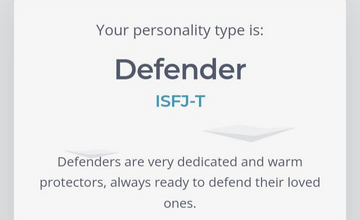
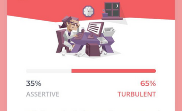
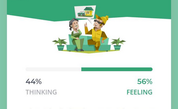
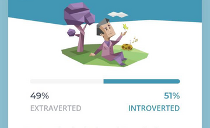
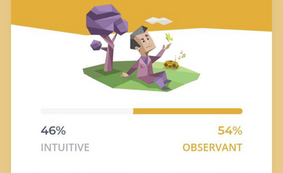
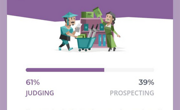

Welcome to my personal blog! I'm Jhunel Ross Baldo, and this blog is a place where I share my thoughts, experiences, and passions with the world. Here, you'll find a variety of content ranging from knowing more about me, including knowing more about my personality. As a student, I bring a unique perspective to my writing, drawing on my experiences in Technopreneurship. I'm also an avid Reader, and I enjoy exploring new places and trying new things. Through this blog, I hope to inspire, educate, and entertain my readers, and to create a community of like-minded individuals who share my interests. Whether you're looking for advice, inspiration, or just a good read, I hope you'll find something here that resonates with you. Thanks for stopping by, and I look forward to connecting with you through this blog!
Jhunnie Ross Baldo
Personal Blog


Identity

Nature

Mind

Energy

Tactics
@Jhunnie
February 21, 2023
What is it like to be me?
@Jhunnie
February 21, 2023
Innovation Mindset Evaluation Results
The Berkeley Innovation Index (BII) was created at UC Berkeley's Sutardja Center for Entrepreneurship & technology (SCET). In cooperation with industry professionals, BII has been developed to offer simple yet powerful ways to measure something never before measurable: An individual's innovative mindset level, by relating it to traits linked to individual innovation capability.
Your Personal Innovation Mindset Level is currently 68.59999999999999 out of 100.
INNOVATION ZONE - 100.0Your Innovation Zone is your interest level and motivation for innovation and entrepreneurship.
TRUST - 54.67Trust is necessary to increase the speed of communication and feedback for new ideas.
RESILIENCE - 92.5Resilience is important to persevere over failures. Resilient people view setbacks as learning opportunities instead of personal failures.
DIVERSITY - 72.5Diversity of backgrounds and perspectives is an important source of value. To attain this value, a person needs to be able to lower thier social barriers to exchange information with people with different backgrounds.
BELIEF - 67.33Belief in one's own ideas and abilities is necessary to influence others and and find motivation to overcome obstacles.
ALLOCATION - 85.0Allocation is your ability to know when to focus on perfection and when to allow good enough to be good enough to have an optimal balance of resources.
COLLABORATION - 82.5Collaboration allows innovation be increasing the sharing of information managing unproductive conflict.
COMFORT ZONE - 85.0Having a wide comfort zone is correlated with growth mindset is necessary for a person to grow, adapt, and innovate.